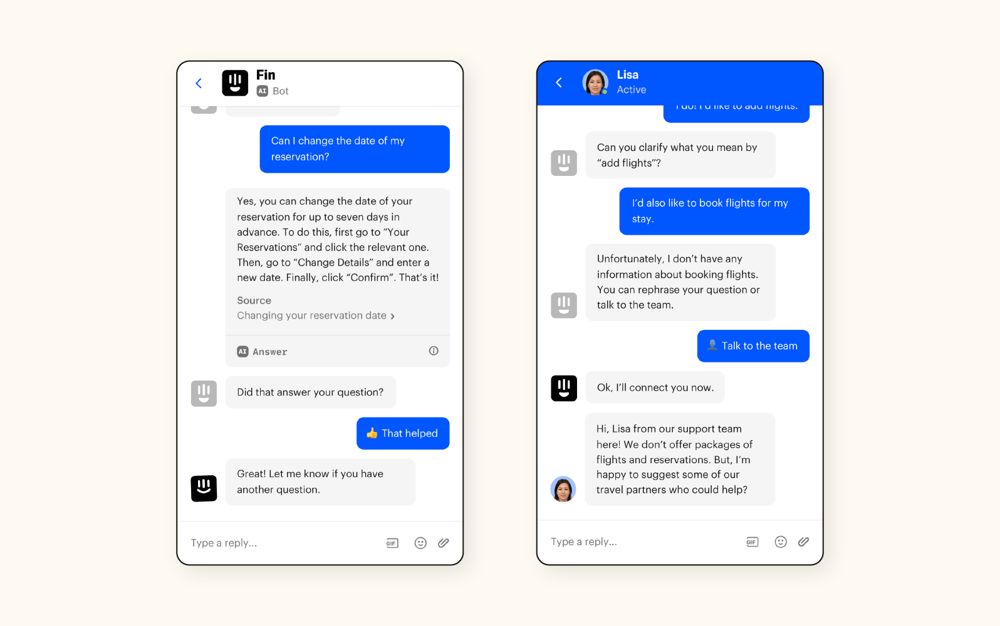
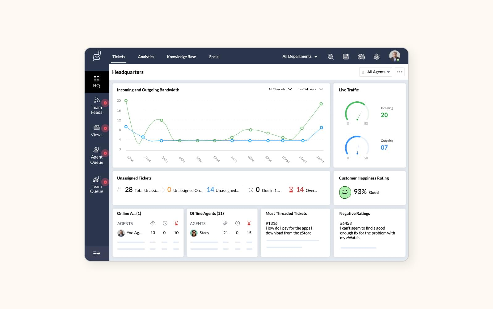

Veille Informatique L’intelligence artificielle au service de l’automatisation du support informatique
Objectif
Dans le cadre du Bloc 1 – Support et mise à disposition de services informatiques, j’ai réalisé une veille informationnelle sur l’utilisation de l’intelligence artificielle dans le support informatique. L’objectif était de comprendre comment l’IA permet d’automatiser certaines tâches et d’améliorer la gestion des incidents.
L’IA dans le support utilisateur
De plus en plus d’entreprises utilisent des chatbots intelligents pour répondre aux demandes simples des utilisateurs. Ces assistants virtuels peuvent guider un utilisateur dans la résolution d’un problème courant, comme la réinitialisation d’un mot de passe ou la configuration d’un logiciel.
Cette automatisation permet de réduire le nombre de tickets traités par les techniciens et d’améliorer la rapidité de réponse.
Image : Exemple de chatbot d’assistance
Figure 1 – Illustration d’un assistant virtuel pour le support informatique.
Automatisation de la gestion des tickets
L’intelligence artificielle peut également analyser automatiquement les tickets d’incident. Elle est capable de classer les demandes par catégorie, de détecter les urgences et de les attribuer au technicien le plus adapté.
Cette analyse intelligente permet d’optimiser l’organisation du service informatique et de réduire le temps de traitement des incidents.
Image : Exemple de tri automatique des tickets
Figure 2 – Illustration d’une classification automatisée des incidents.
Avantages et limites
L’automatisation par l’IA permet un gain de temps, une meilleure réactivité et une amélioration de la qualité de service. Elle contribue également à la réduction des tâches répétitives pour les techniciens.
Cependant, l’intervention humaine reste essentielle pour les incidents complexes. Il est également important de veiller à la protection des données et à la fiabilité des systèmes automatisés.
Image : Interaction entre technicien et système automatisé

Figure 3 – Collaboration entre intelligence artificielle et technicien informatique.
Bilan
Cette veille informatique m’a permis de comprendre que l’intelligence artificielle transforme progressivement le support informatique. Elle ne remplace pas les techniciens, mais elle optimise leur travail et améliore la gestion des services.
Conclusion
L’intégration de l’intelligence artificielle dans le support informatique représente une évolution majeure pour les entreprises. Elle permet d’automatiser certaines tâches, d’améliorer la rapidité d’intervention et de renforcer la qualité du service rendu aux utilisateurs. Cette veille renforce ma compréhension des enjeux actuels liés à l’évolution des systèmes d’information.